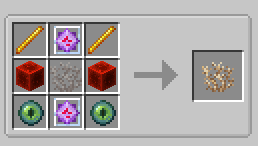
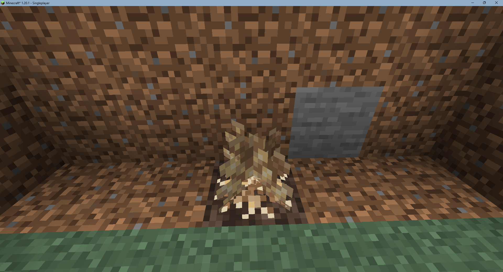
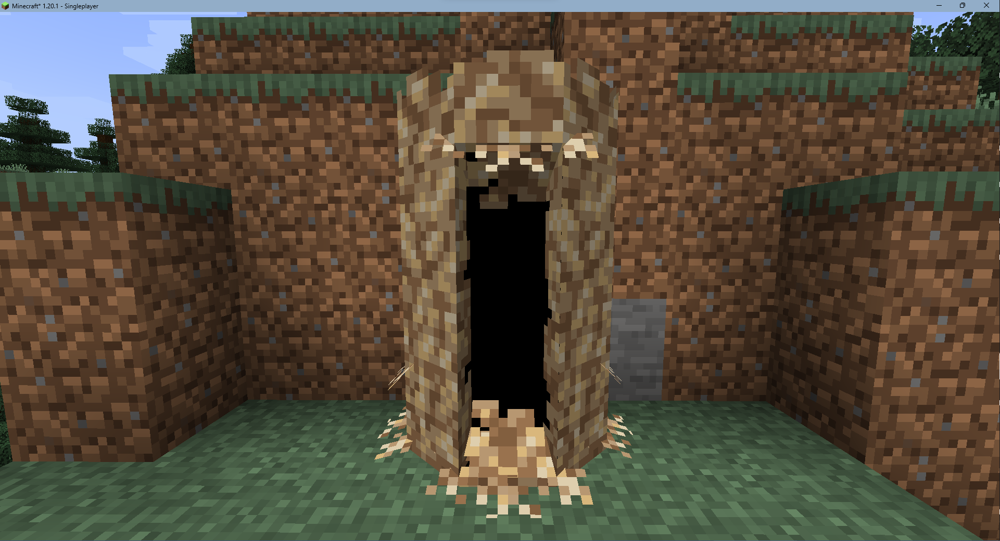
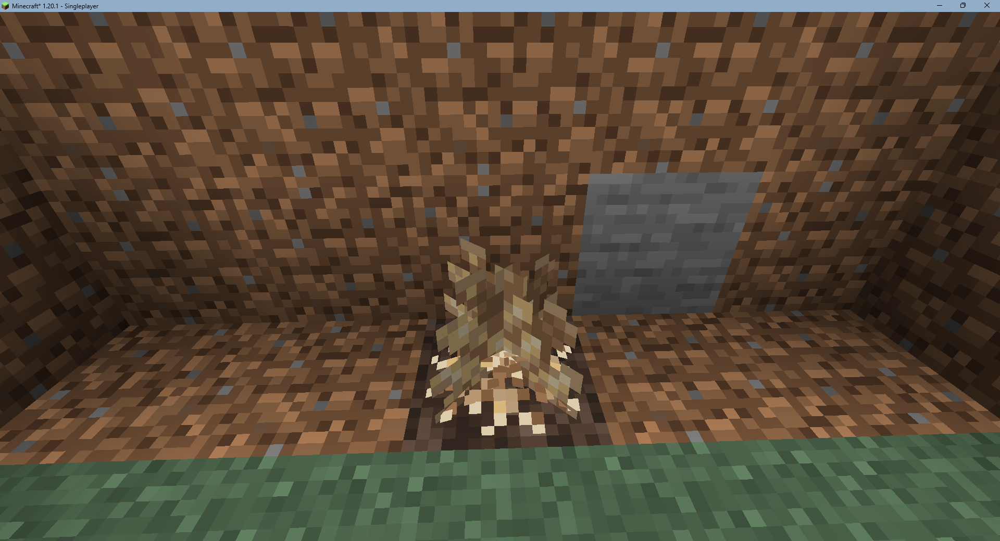
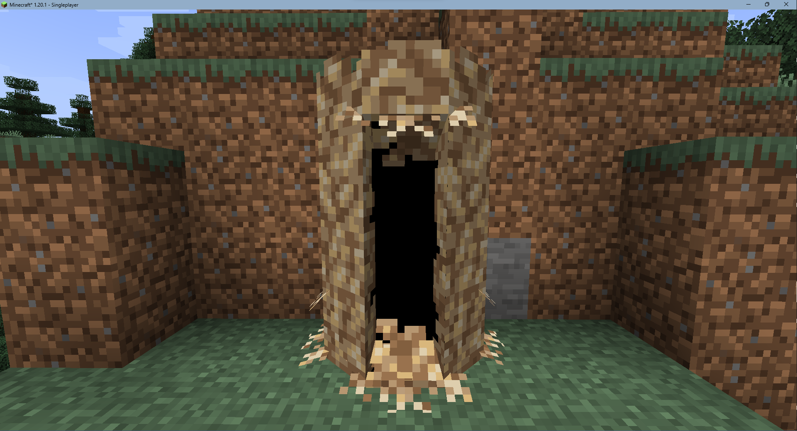

TARDIS Coral
You will need to craft a TARDIS Coral ( on the right )
Then, place the Coral on top of soul sand inside of a rift chunk with enough lighting ( as shown on right )
Now you will have to wait for the coral to grow, it grows depending on the tick speed.
Once it is grown its "door" will open and it will look like how it is on the right
Walk into the growth and you will enter its interior, which will be overgrown and unusable
Restoring the TARDIS
You will need to obtain a console
The TARDIS runs off artron energy and will need to be refueled, once it has enough fuel use the monitor
Once in the monitor, either change the exterior or change the interior and your TARDIS will begin restoration.
Wait for restoration to complete, and enjoy!




